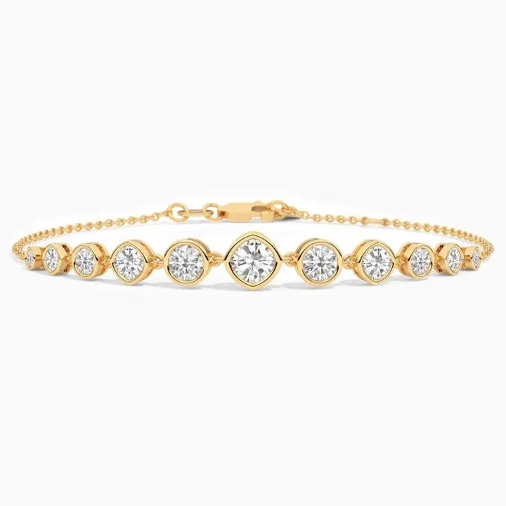

彩鑽成因：粉鑽、藍鑽、黃鑽的顏色密碼
彩鑽的顏色不是「染」的，而是晶格裡的微小「意外」——每個顏色，都藏著一段地質歷史。

核心定義
彩鑽（fancy color diamond）指顏色飽和度達到「彩」級別的鑽石——超過白鑽色階 Z 之後，就進入彩鑽體系。彩鑽的定價邏輯與白鑽完全不同：白鑽追求無色，彩鑽追求「濃、純、正」，顏色越鮮豔越值錢。
彩鑽的顏色不是後天染上的，而是晶格裡的微量雜質與缺陷在吸收特定波長光後呈現的結果。常見成因有四類：雜質原子（氮、硼）、晶格變形（塑性變形）、輻射損傷、氫相關缺陷。
特徵與分類
| 彩鑽顏色 | 主要成因 | 稀有度 |
|---|---|---|
| 黃鑽 | 氮原子聚集 | 相對常見 |
| 藍鑽 | 硼原子（部分為氫） | 極稀有 |
| 粉鑽 | 晶格塑性變形 | 極稀有（集中澳洲阿蓋爾） |
| 綠鑽 | 天然輻射損傷 | 稀有 |
| 紅鑽 | 晶格變形極端版 | 極度稀有 |
彩鑽的顏色分級比白鑽複雜，包含色相（hue）、飽和度（saturation）、色調（tone）三個維度，GIA 用 Fancy Light／Fancy／Fancy Intense／Fancy Vivid／Fancy Deep／Fancy Dark 等詞彙描述——同一色相下，飽和度越高越貴。
科學原理
黃鑽的黃來自氮：氮原子取代碳並聚集，吸收藍紫段光，呈現黃色。藍鑽的藍多來自硼：硼原子取代碳，吸收紅光，讓鑽石呈現藍色——硼越多越藍，也讓部分藍鑽具有半導體性質。粉鑽的粉最特別：它與雜質無關，而是鑽石結晶後受到地殼壓力產生晶格滑移（塑性變形），造成特定波段光吸收——粉、紅、褐、紫鑽多與此機制相關。
綠鑽多與天然輻射有關：放射性礦物放出的粒子撞擊碳原子，把碳原子撞離原位形成缺陷，吸收紅光呈現綠色。紅鑽則是晶格變形的極端表現——粉鑽變形程度再加深，就成了紅鑽，也因此極度稀有。
鑑定與鑑別方法
- 看 GIA 彩鑽報告的 Color Grade（色相/飽和/色調）
- 用分光儀測吸收光譜判斷致色機制
- 顯微鏡找塑性變形紋（粉鑽）與輻射暈（綠鑽）
- 區分「天然色」與「處理色」：輻照改色、HPHT 改色在證書上必須標示
- 辨別仿色：鍍膜鑽石顏色只在一層皮上
市場行情與保養建議
彩鑽市場上，粉鑽與藍鑽因稀有度與名人效應價格屢創新高；黃鑽相對親民，是入門彩鑽的首選。阿蓋爾礦關閉後，粉鑽供應銳減，二手與拍賣市場價格持續走高。
投資彩鑽的鐵律：看證書顏色分級（Fancy Vivid 以上為佳）、看天然色（未處理）、看克拉數與淨度。彩鑽的流動性低於白鑽，變現要透過拍賣或專業渠道，短期不適合當投機工具。
常見誤區
黃鑽相對充足，價格可以很親民；而紅鑽、藍鑽、粉鑽才是天價。彩鑽是光譜兩端的市場——「彩」不等於「貴」，要看顏色與稀有度。
「深」不是「濃」。「濃」是飽和度（Fancy Vivid），「深」是色調（Dark）——過暗的深色調反而便宜。Fancy Vivid 才是彩鑽的價值高峰。
冷知識
含硼的藍鑽可以導電，是天然寶石中少見的「半導體」。鑑定師甚至利用導電性區分藍鑽與仿品。
粉鑽是純碳晶格「變形」出來的顏色——同一顆鑽石，結晶後被擠壓，顏色就從白變粉。這在地質上是極罕見的偶然。
反直覺觀點
氮在白鑽是扣分項（黃調），在黃鑽卻是價值來源；晶格變形讓白鑽變「劣」，讓粉鑽變「稀」。同一個物理缺陷，換個賽道，身價天差地遠。
天然黃鑽產量遠多於粉藍鑽，但市場上「fancy vivid yellow」依然身價不菲——因為「濃豔」等級本身稀有。供應充足的是普通黃，濃豔的黃永遠是少數。